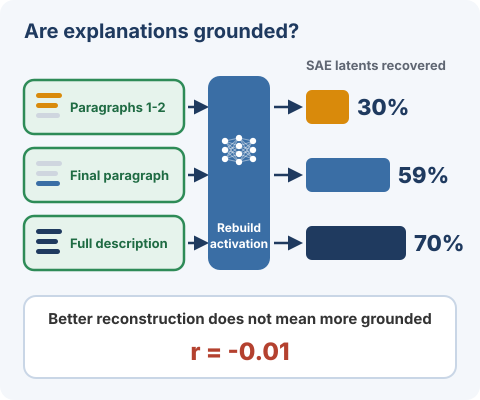

Are NLA explanations grounded in the activation? A sparse autoencoder check
Natural Language Autoencoders (Fraser-Taliente et al., 2026) take in an activation, produce an explanation for it through the AV (activation verbalizer), and then rebuild that activation using the AR (activation reconstructor). Reconstruction, however, is not a good measure of how grounded the text is to the activation. To test groundedness, I split 200 explanations into three variants (the first two paragraphs, the final paragraph, and the full explanation) and ran two tests using an SAE: how many of the original activation’s SAE latents each variant’s reconstruction recovers, and how many of those latents’ labeled features an LLM judge finds stated in the text. The final paragraph recovered 59% of the latents against 70% for the full explanation, while the first two paragraphs recovered only 30% despite being 44% of the text. Across individual explanations, FVE does not predict groundedness (r = -0.01, n = 188), so it cannot be used to tell how grounded any one explanation is.